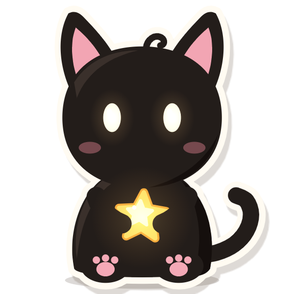

10月13日 · 周二 21:30
今天的星星有点亮
你今天把实训材料交上去了。我看见你回来的时候，肩膀终于松下来一点。
剩下没理清的念头，我先收进星星里了，它们明天还在，不会跑。今晚就别惦记啦，安心睡。
剩下没理清的念头，我先收进星星里了，它们明天还在，不会跑。今晚就别惦记啦，安心睡。
信里夹了一首歌 ·《晚安》颜人中
—— 米露
今天 2 封 · 1 封没读

不留下的话，它会在明天的新信到达时收进往期。
“太远了，你一个人怎么照顾自己？”
你可以接：住的地方离公司很近，我每周跟你视频。
“家附近不也有实习吗？”
你可以接：这家做的就是我想学的，错过有点可惜。
点了才搭场景；不想练，看完这封信就够了。